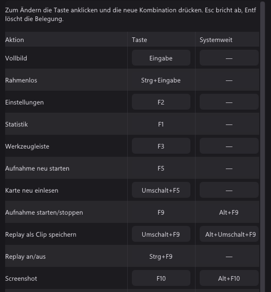

Kurz gesagt
Verglichen mit AmaRecTV 4.11 Live und seinem Handbuch, dazu Foren und Testberichte.
| qBlank | AmaRecTV | |
|---|---|---|
| Letzte Version | 2026, wird weiterentwickelt | 4.11, Oktober 2017 |
| Quellcode | Offen, GPLv3 | Geschlossene Freeware |
| Sprache | Deutsch und Englisch | Japanisch; auf Englisch nur bis 2.31, von 2013 |
| Video-Codec | Über ffmpeg eingebaut, auf Wunsch geladen | Braucht AMV4, kostenpflichtig; ohne Lizenz kommt ein Logo ins Video |
| Anzeige | Eigener Renderer, Direct3D 11 oder Vulkan | Overlay (VMR7) oder EVR |
| Format der Karte | Gewählt und an die Videonorm angepasst | Aus einer Liste gewählt oder von Hand eingetippt |
| Ton der Karte | Jedes Format, eigener Puffer ab 5 ms | 16 Bit Stereo, meist 48 kHz, passend zum Wiedergabegerät |
| Deinterlacing | Im Bild und in der Aufnahme | Nur in der Vorschau |
| Videonorm | Automatisch gefunden | Im Treiberdialog der Karte |
| Composite-Dot-Crawl | Filter eingebaut | – |
| Bildschirm und Fenster | Monitor oder Fenster, jedes Spiel im Fenster | Bereich, Fensterposition oder GDI-Fenster ohne DirectX-Inhalt |
| Aufnahme | MKV, MP4, AVI; H.264, H.265, AV1, verlustfrei | AVI mit AMV4 oder einem anderen VfW-Codec |
| Replay-Puffer | Arbeitsspeicher oder Platte, bis 30 Minuten | – |
| HDR | Anzeige, Aufnahme, Screenshots, Kamera | – |
| Virtuelle Kamera | 64 Bit, HDR | Nur 32-Bit-Programme, braucht AmaRecTV 3.10 |
| Systeme | Windows 10 und 11, 64 Bit | Windows 8.1 und 10, 64 Bit; Windows 7 ungetestet, mit Lücken |
Die beiden Projekte
AmaRecTV
- Von einem japanischen Entwickler. Version 4.01 erschien im Februar 2016, 4.11 im Oktober 2017. Seitdem nichts.
- Freeware, Quellcode geschlossen. Version 4 hat eine Spracheinstellung, laut Handbuch geht bisher aber nur Japanisch. Auch das Handbuch ist japanisch.
- Die englische Website ist viel kleiner als die japanische und holprig übersetzt. Sie bietet 2.31 von 2013 auf Englisch an. Version 3 und 4 fehlen dort.
- Laut Handbuch gibt es keinen Support für Nutzer.
- Kein Installer: entpacken und starten. Das Handbuch warnt davor, es unter Program Files abzulegen, sonst werden Einstellungen nicht gespeichert.
- Es braucht den Video-Codec AMV4 ab Version 4.10. AMV4 ist kostenpflichtige Shareware, 2.808 Yen. Ohne Lizenz setzt es ein Logo in die Aufnahme.
- Es braucht eine CPU mit SSE4.1. Windows 10 kam mit 4.11 dazu.
- Viele Anleitungen und Download-Seiten bieten noch 3.10 an. Laut eigener Readme braucht auch sie AMV4.
qBlank
- Quelloffen unter GPLv3. Code, Issues und Releases liegen auf GitHub.
- Deutsch und Englisch, mit Handbuch in beiden.
- Eine Datei von etwa 3 MB, über winget, die Website oder GitHub.
- Zum Aufnehmen braucht es ffmpeg. qBlank bietet an, es zu laden, aus einer festen Quelle, gegen seinen Hash geprüft. Kein Codec zu kaufen, kein Logo.
- Updates werden beim Start gesucht, wenn man will.
Capture Card: Anzeige
AmaRecTV: Overlay oder EVR
- AmaRecTV zeichnet über einen DirectShow-Videorenderer. Das Handbuch empfiehlt Overlay (VMR7) für geringe Verzögerung.
- EVR ist der Ausweg. Das Handbuch nennt seine Anzeigeverzögerung groß und rät davon ab.
- Overlay bedient nur ein Programm zur Zeit. Unter Windows 7 geht es nur mit ausgeschaltetem Aero.
- Overlay-Video erscheint in keiner Bildschirmaufnahme.
- Unter Erweitert 2 lässt sich die Vorschau verlangsamen, solange die Maus ruht, um CPU zu sparen.
qBlank: eigener Renderer
- qBlank zeichnet das Bild selbst, mit Direct3D 11 oder Vulkan. Anzeige → Grafikschnittstelle wählt eins.
- Jedes Bild wird gezeichnet, wenn es ankommt, in der Rate der Quelle. Ein noch nicht gezeichnetes Bild wird vom nächsten ersetzt, nie dahinter eingereiht.
- Ein Bild Warteschlange in der Swapchain, Tearing erlaubt, VSync ab Werk aus.
- Nichts hängt an Overlay-Unterstützung im Treiber. Bildschirmaufnahmen, Remote Play und OBS sehen qBlanks Fenster wie jedes andere.
F1 zeigt, was qBlank selbst beiträgt: Durchlauf ist die Zeit von der Ankunft eines Bildes in qBlank, bis es qBlank verlässt. Etwa 1 ms bei 1080p60. Karte und Monitor kommen noch dazu.

Was jedes über das Signal zeigt
| qBlank (F1) | AmaRecTV (Statusleiste) | |
|---|---|---|
| Bildraten | Quelle, gemeldet, Ausgabe | Aufnahme und Anzeige |
| Verlorene Bilder | Ja | Ja, dazu no frame |
| Format | Größe, Farbformat, Norm, Halbbilder | Größe, FourCC, progressiv oder interlaced, Halbbildreihenfolge |
| Eigene Zeit | Durchlauf in ms | – |
| Während der Aufnahme | Encoder, Puffer, Platte | Schreibtempo, Pufferfüllung, CPU, ms pro Bild |
Capture Card: Einrichtung
AmaRecTV: von Hand
- Größe, Bildrate, Farbformat und Bittiefe werden aus einer Liste gewählt oder in ein Feld getippt.
- Das Handbuch nennt Beispiele: 720×480 bei 29,97 für einen GV-USB2, 720×240 bei 59,94 für ein SNES über RGB.
- 1080i ist als 30 fps einzutragen. PS2-480i muss man von Hand eintippen.
- Bei einer Blackmagic Intensity Pro 4K müssen die Einstellungen genau zum Signal passen. Sonst gibt es kein Bild und keinen Hinweis, wo es abweicht. Laut Handbuch ist diese Karte nur etwas für Fortgeschrittene.
- Eine Sknet MonsterX3A kann ohne Signal Minuten zum Starten brauchen.
- Farbformate: RGB32, YUY2, UYVY, HDYC. Ein 10-Bit-RGB-Signal wird auf 8 Bit gekürzt.
qBlank: ans Signal angepasst
- Quelle listet, was die Karte anbietet: Farbformat, Auflösung und Bildrate.
- Auflösung an die Videonorm anpassen ist ab Werk an: passt die Auflösung nicht, etwa 720×480 bei PAL, stellt qBlank die richtige selbst ein.
- Rate des Signals nimmt 50 Hz bei PAL, 59,94 bei NTSC, 60 bei PAL 60.
- Werte von Hand eingeben gibt es für Formate, die eine Karte nicht auflistet.
- NV12 und P010 ebenso wie YUY2, UYVY und RGB. 10 Bit bleibt 10 Bit, HDR bleibt HDR.

Bei beiden bedient eine Karte nur ein Programm zur Zeit.
Capture Card: Ton
AmaRecTV
- Der Ton kommt als 16 Bit Stereo. Die Rate wird gewählt, meist 48 kHz.
- Das Standardformat des Wiedergabegeräts muss passen. Sonst meldet AmaRecTV einen Formatfehler.
- Die Auswege des Handbuchs: dasselbe Format in Windows einstellen; der Exklusivmodus, der andere Programme stumm schaltet, aber jedes Format spielt; oder den Fehler ignorieren, dann bleibt AmaRecTVs Vorschau stumm, die Aufnahme läuft trotzdem.
- Der Audiorenderer zielt ab Werk auf 40 ms. Mehr verringert Knacken, verzögert aber.
- Ein zweites Wiedergabegerät kann den Ton mitbekommen, zum Streamen.
- Mono lässt sich zu Stereo machen, auch in der Aufnahme.
- Tonverzögerung verschiebt den Ton in der aufgenommenen Datei von Hand. Das Handbuch rät, ±100 ms zu probieren, bis etwa ±500.
- Version 4 hat keinen Mikrofoneingang; Version 3 mischte bis zu drei Quellen.
qBlank
- Jedes Format, das die Karte schickt. qBlank wandelt es in das, was das Gerät spielt.
- Tonpuffer von 5 bis 200 ms, ab Werk 30.
- Exclusive Mode umgeht den Windows-Mixer für weniger Verzögerung. Wie bei AmaRecTV ist das Gerät dann für andere Programme gesperrt.
- A/V-Versatz verschiebt Ton oder Bild bei der Wiedergabe um bis zu 200 ms, für einen Fernseher oder ein Headset mit eigener Verzögerung. Die Aufnahme bleibt davon unberührt.
- M schaltet stumm, + und - regeln die Lautstärke. Beides lässt die Aufnahme in Ruhe.
- Mikrofone und andere Eingänge kommen als eigene Quellen in die Aufnahme. Siehe Aufnahme.

Analoge Konsolen
| qBlank | AmaRecTV | |
|---|---|---|
| Videonorm | PAL, NTSC oder SECAM automatisch gefunden, folgt einem Wechsel zwischen 50 und 60 Hz | Im Treiberdialog |
| Wann deinterlaced wird | An jedem Bild gemessen | Aus einer Tabelle von Größe und Bildrate, oder von Hand |
| Modi | Aus (Weave), Bob, Bob (interpoliert), Bewegungsadaptiv, Kantenorientiert, YADIF | Action, RPG, Retro |
| Halbbildreihenfolge | Gemessen, oder von Hand | Aus der Tabelle, oder oben oder unten zuerst von Hand |
| Gilt für die Aufnahme | Ja | Nein, nur der Zuschnitt |
| Seitenverhältnis in der Aufnahme | Quadratische Pixel, 720×576 wird 768×576 | – |
| Composite-Dot-Crawl | Fünf Filter, nebeneinander zu vergleichen | – |
| Zuschnitt | Von Hand oder erkannt, je Bildgröße gemerkt | Ein Zuschnitt-Werkzeug; Einstellungen in einer Liste zum Umschalten |
| Pixelgrafik | Natives Pixelraster, Sharp Bilinear, Integer-Skalierung | Retro-Modus |
| Zeilenlücken, Röhrenmaske | Eingebaut, nur für die Anzeige | – |
Deinterlacing
AmaRecTV entscheidet nach einer Tabelle: eine bestimmte Größe und Bildrate gilt als interlaced oder nicht. Eine Karte liefert 240p und 480i oft in gleicher Größe und Rate, also kann die Tabelle sie nicht unterscheiden. Die Halbbildreihenfolge lässt sich von Hand setzen.
Seine drei Modi sind nach Spielgenres benannt. Das Handbuch beschreibt sie:
- Action: für schnelle Spiele und langsame PCs. Gut in Bewegung, aber ruhige Szenen zittern auf und ab und verlieren Schärfe.
- RPG: Qualität, für schnelle PCs. Besser in ruhigen Szenen, etwas Rauschen in Bewegung. Nicht für RGB-Formate.
- Retro: gemacht für Signale vom Famicom bis zur PS1, für alte Spiele das Beste bei Last und Qualität.
qBlank misst jedes Bild. Mit Nur bei interlaced Quellen anwenden darf der Deinterlacer anbleiben: 240p geht unberührt durch, 480i und 576i werden deinterlaced. Auch die Halbbildreihenfolge wird gemessen.

Die Aufnahme
In AmaRecTV gelten Seitenverhältnis und Deinterlacing nur für die Vorschau. Die Aufnahme behält die rohen Bilder der Karte, mit Zuschnitt. Eine 480i-Aufnahme zeigt Kammstreifen und trägt kein Seitenverhältnis. Die FAQ nennt das normal: deinterlacen und skalieren im Player oder beim Umwandeln.
qBlank nimmt das Bild so auf, wie man es sieht: zugeschnitten, deinterlaced, mit quadratischen Pixeln. Das Seitenverhältnis hat einen eigenen Haken, Auch für Aufnahme, Screenshot und Kamera, ab Werk an. Für die Bilder der Karte, wie sie ankommen, hat der Reiter Encoder Ohne Filter, für verlustfreie Aufnahmen.
Videonorm
Eine Karte auf NTSC zeigt eine PAL-Konsole schwarzweiß oder mit wandernden Farben. In AmaRecTV stellt man im Treiberdialog um. qBlank probiert die Normen selbst durch, bis die Farbe einrastet. F7 prüft am aktuellen Bild noch einmal.

Composite
Composite trägt die Farbe in der Helligkeit, das hinterlässt wandernde Punkte an Kanten. qBlank hat fünf Filter dagegen; sie erscheinen nur an einem Composite-Eingang. F12 teilt das Bild in aus und an, F11 hält es an. AmaRecTV hat dafür nichts.

Pixelgrafik und Röhre
- Natives Pixelraster: man wählt, wie viele Pixel die Konsole pro Zeile zeichnet, 256 bei einem SNES. Jedes Konsolenpixel wird dann ein scharfer Block.
- Sharp Bilinear hält Pixel bei jedem Faktor scharf und gleich breit. Integer-Skalierung steht beim Seitenverhältnis.
- Zeilenlücken, Röhrenmaske und Pixelraster gelten nur für die Anzeige. Aufnahmen, Screenshots und die Kamera bekommen das Bild ohne sie.

Bildschirm und Fenster
Wie jedes aufnimmt
| qBlank | AmaRecTV | |
|---|---|---|
| Ganzer Monitor | Desktop Duplication | Desktop Duplication, als Bereich |
| Teil des Bildschirms | – | Ein gezogener Bereich, oder einer, der einem Fenster folgt |
| Ein Fenster | Windows.Graphics.Capture | GDI |
| Spiele und Videos im Fenster | Ja | Nicht mit GDI: DirectX-Inhalt bleibt draußen |
| Verdecktes Fenster | Kommt durch | Bereich: was davor liegt, wird aufgenommen; GDI: kommt durch |
| Fenster verschoben oder vergrößert | Gefolgt, eine neue Größe nach einem Moment | Position gefolgt; eine neue Größe erst ab der nächsten Aufnahme |
| Exklusives Vollbild | Nicht bei älteren Spielen; randloses Fenster geht | Nicht möglich |
| Bildrate | Jedes neue Bild, oder gedeckelt | Aus einer Liste, oder die Rate des Monitors |
| Mauszeiger | An oder aus | An oder aus |
| HDR-Desktop | In HDR | – |
| Ton | Systemton ohne qBlank | AmaRecTV stumm; PC-Ton nur über das Zusatzprogramm AmaSte |
AmaRecTV
- Ein blauer Rahmen markiert den Bereich. Pfeiltasten schieben ihn um ein Pixel, eine Lupe und Einrasten helfen.
- Der Fensterfolge-Modus folgt der Position des Fensters. Eine neue Fenstergröße gilt ab der nächsten Aufnahme.
- Der GDI-Fenstermodus sieht durch verdeckende Fenster. Was DirectX zeichnet, bleibt aber draußen, etwa Spiele und Aero-Glas, und das Handbuch warnt, das Ergebnis könne vom Bildschirm abweichen.
- Ohne Dummy-Pixel, ein durchsichtiges Pixel, das in der Rate des Monitors neu gezeichnet wird, ruckelt Bewegung. Das Handbuch hat es deshalb an.
- Monitor Rate nimmt die Rate des Monitors. 30 fps auf einem 59,94-Hz-Monitor werden 29,97.
- Vier Presets, A bis D, halten verschiedene Bereiche.
- Im Desktop-Modus ist AmaRecTV immer stumm, gegen Rückkopplung. PC-Ton braucht das Zusatzprogramm AmaSte, nur 16 Bit, im Format des Geräts.
- Alt+D zeigt den Rahmen, Umschalt+S nimmt einen Desktop-Screenshot.
qBlank
- Bildschirm nimmt einen ganzen Monitor, Fenster ein Fenster, Spiele und Videos eingeschlossen.
- Ein verdecktes Fenster kommt durch. Ein minimiertes nicht.
- Ändert sich der Titel oder ist das Fenster weg, nimmt qBlank ein anderes Fenster desselben Programms.
- Der Rahmen wird immer abgeschnitten.
- Jedes neue Bild wird sofort gezeichnet. Aufnahme → Bildrate auf wie die Quelle behält alle, oder deckelt sie.
- Systemton ohne qBlank nimmt alles außer qBlanks eigener Wiedergabe. qBlank bleibt hörbar, und nichts hallt doppelt.
- qBlank auf der Aufnahme verbergen ist beim Bildschirm ab Werk an. Es hält qBlank aus jeder Bildschirmaufnahme heraus, auch aus Remote Play und Remotedesktop.
- Vorschau aus zeigt eine kleine Anzeige mit Auflösung, Bildrate und Aufnahmezeit und zeichnet seltener.


Aufnahme
| qBlank | AmaRecTV | |
|---|---|---|
| Container | MKV, MP4; AVI für verlustfrei | AVI 2.0, nur auf NTFS |
| Video-Codecs | H.264 über NVENC, Quick Sync, AMF oder x264; H.265 über NVENC, Quick Sync, AMF oder x265; AV1 über NVENC, Intel Arc, AMD oder SVT-AV1 | AMV4 oder jeder installierte 64-Bit-VfW-Codec |
| Verlustfrei | H.265 verlustfrei über NVENC, UT Video, unkomprimiertes RGB | AMV4 oder ein verlustfreier VfW-Codec |
| Ton-Codec | AAC mit 96 bis 320 kbit/s; PCM in AVI | PCM; MP3 braucht einen 64-Bit-ACM-Codec, schwer zu finden |
| Was aufgenommen wird | Das Bild wie angezeigt; Ohne Filter für die Bilder der Karte | Die Bilder der Karte, zugeschnitten |
| Auflösung | Die der Quelle, oder eine feste Höhe von 2160p bis 360p | Die der Karte |
| Bildrate | Die der Quelle, oder gedeckelt | Die der Quelle, oder geteilt |
| 10 Bit, 4:4:4, HDR | Ja | – |
| Tonquellen | Karte, Eingänge, Ausgänge, System ohne qBlank; Verstärkung bis +12 dB | Die Karte, mit Aufnahmelautstärke |
| Spuren | Gemischt, getrennt oder beides | Eine |
| Tonverzögerung in der Datei | – | Von Hand, bis etwa ±500 ms |
| Dateien teilen | Bei einer Größe, nahtlos | Bei einer Größe, ab Werk 1,5 TB |
| Schreibpuffer | 512 MB, oder größer im Arbeitsspeicher | 32 bis 4096 MB, ab Werk 128 |
| Platte zu langsam | Warnung bei 75 %; voll stoppt die Aufnahme, der Rest wird noch geschrieben | Über 50 % heißt zu langsam; voll kann die Aufnahme stoppen |
| Freier Platz | Als verbleibende Aufnahmezeit angezeigt | Während der Aufnahme angezeigt; beim Start geprüft |
| Nach einem Absturz | MKV bleibt abspielbar | Reparaturwerkzeug für das AVI |
| Replay-Puffer | Arbeitsspeicher oder Platte, 5 s bis 30 min | – |
| Marker | MKV, MP4 und Clips | – |
| Timer | – | Nach einer Zeit stoppen; geplanter Start über einen eigenen Planer |
| Zweiter Ordner | – | Springt ein, wenn der erste versagt |
AmaRecTV
- Die Statusleiste zählt Bilder, die AmaRecTV einfügt oder verwirft, um den Ton synchron zu halten. Laut Handbuch passiert das fast immer und ist kein Fehler.
- Ein D dort heißt, der Ringpuffer ist übergelaufen und Bilder gingen verloren.
- Der Start einer Aufnahme kann etwa 10 s dauern, während eine Festplatte anläuft.
- Kurze Aufnahmen lassen sich in einen Temp-Ordner verschieben. Eine Berichtsdatei protokolliert jede Aufnahme.
- 4.11 hat die Aufnahme neu gebaut: sie läuft jetzt nach Zeit statt nach Bildern.
qBlank
- Der Encoder läuft in qBlank, über die Bibliotheken von ffmpeg. Mit NVENC und AMF geht das Bild ohne Kopie von der GPU zum Encoder.
- Ändern sich Größe oder Videonorm während einer Aufnahme, beginnt nahtlos eine neue Datei.
- Replay-Puffer und Aufnahme teilen einen Encoder. Umschalt+F9 speichert die letzten Minuten als Clip.
- Marker: Strg+Umschalt+F9 setzt einen, Player zeigen sie als Kapitel.


Screenshots und virtuelle Kamera
| qBlank | AmaRecTV | |
|---|---|---|
| Screenshot-Formate | PNG, JPEG, JPEG XR, AVIF | BMP, PNG, JPEG |
| HDR-Screenshots | JPEG XR oder AVIF | – |
| Mit der Bedienoberfläche | Bedienoberfläche mit aufnehmen | – |
| In die Zwischenablage | Strg+F10 | Eine Einstellung |
| Virtuelle Kamera | Eingebaut, eine DirectShow-Quelle | AmaRec Live, installiert ab Version 3.10 |
| Programme, die sie sehen | 64 Bit | 32 Bit |
| Kamerabild | qBlanks Bild, in der Rate der Quelle | Ohne Skalierung |
| Kamera-Formate | NV12; P010 mit PQ für HDR | – |
AmaRec Live kam mit 3.10, und 4.x nutzt es weiter. Sein Status zeigt Rdy, Run oder Disable. OBS-Nutzer berichten, dass sie dafür das 32-Bit-OBS brauchten.

Tasten und Presets
| qBlank | AmaRecTV | |
|---|---|---|
| Jede Taste änderbar | Ja | Ja |
| Tasten in anderen Programmen | Eine zweite Taste unter Systemweit; kein anderes Programm bekommt sie | Global hook, für alle Tasten |
| Maus | Doppelklick für Vollbild | Doppelklick, Rad, und beides mit der rechten Taste, alles belegbar |
| Aufnehmen | F9 | Alt+Z, stoppen Alt+X |
| Screenshot | F10 | Alt+S |
| Vollbild | Enter | Alt+Enter |
| Rahmenlos | Strg+Enter | Strg+Enter |
| Stumm | M | M |
| Einstellungen | F2 | C |
| Presets | Profile mit Namen, von Hand gewählt oder nach der erkannten Videonorm | Zwölf, auf F1 bis F12 |
- AmaRecTVs Global hook lässt seine Tasten wirken, während ein anderes Programm den Fokus hat.
- qBlanks systemweite Tasten gehören qBlank, solange es läuft: kein anderes Programm bekommt diese Kombination. Ist sie schon vergeben, steht sie rot da.

Was Nutzer über AmaRecTV berichten
Aus Foren und Testberichten. Die meisten sind einige Jahre alt, viele betreffen 3.x.
- Overlay gab auf manchen Windows-10-Systemen mit Nvidia-Karten ein schwarzes Bild.
- Ein Nutzer einer SC-512N1 fand die Verzögerung etwas geringer als in der Vorschau von OBS.
- Speedrunner nahmen den Ton aus AmaRecTV, weil das Monitoring von OBS etwa eine Zehntelsekunde hinterherhing.
- Mit einem GV-USB2 verlor ein Nutzer 30 Bilder in 35 s, wo VirtualDub keins verlor. Andere Testberichte fanden keine Aussetzer und den Ton synchron.
- Unter 2.31 lief der Ton der Vorschau manchmal zu schnell.
- Wünsche: eine Pegelanzeige und eine Anleitung auf Englisch.
- Ein Capture-Forum rät ab: fehlerhaft, und nur mit wenigen Karten lauffähig.
Nur in AmaRecTV
- Ein Bereich des Desktops, von Hand gezogen oder einem Fenster folgend.
- Ein Timer, und geplante Aufnahmen über einen eigenen Planer.
- Ein zweiter Speicherordner, falls der erste versagt.
- Ein Reparaturwerkzeug für AVIs, die ein Absturz beschädigt hat.
- Aktionen für Mausrad und Doppelklick, belegbar.
- Fenstergröße per Taste: 50, 100 und 200 %.
- Prozesspriorität, und eine langsamere Vorschau, solange die Maus ruht.
- Eine Tonverzögerung für die aufgenommene Datei.
- Mono zu Stereo, und eine zweite Tonausgabe.
- Eine virtuelle Kamera für 32-Bit-Programme.
- Windows 8.1.
Nur in qBlank
- Quelloffen, auf Deutsch und Englisch, wird weiterentwickelt.
- Kein Codec zu kaufen, kein Logo. Hardware-Encoder von NVIDIA, Intel und AMD, AV1 eingeschlossen.
- Videonorm, Interlacing, Halbbildreihenfolge und Farbbereich aus dem Bild gemessen.
- Deinterlacing und Seitenverhältnis in der Aufnahme, nicht nur in der Vorschau.
- Composite-Filter mit Vergleich nebeneinander.
- Das Pixelraster der Konsole, Sharp Bilinear, Zeilenlücken und eine Röhrenmaske.
- Ton der Karte in jedem Format, mit A/V-Versatz für die Wiedergabe.
- Mikrofone und Systemton in der Aufnahme, auf eigenen Spuren.
- Fensteraufnahme, die Spiele und Videos einschließt.
- Replay-Puffer im Arbeitsspeicher oder auf der Platte, bis 30 Minuten, und Marker.
- HDR von der Karte oder vom Desktop, durch Anzeige, Aufnahme, Screenshots und Kamera.
- Eine virtuelle 64-Bit-Kamera mit qBlanks vollem Bild.
- F1 zeigt qBlanks eigene Zeit pro Bild.